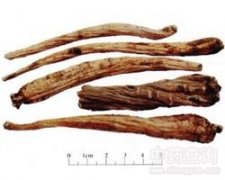

金铁锁

拼音
Jīn Tiě Suǒ
别名
独钉子、独定子、昆明沙参、金丝矮陀陀、对叶七、白马分鬃、独鹿角姜、百步穿杨、穿石甲、蜈蚣七[云南]
来源
石竹科金铁锁属植物金铁锁Psammosilene tunicoides W. C. Wu et C. Y. Wu，以根入药。秋冬挖根，刮去外皮，晒干备用。
生境分布
生于松林、山野荒地、山坡。分布云南、四川金沙江流域。产于云南。
药材特点
多年生平卧蔓生草本。根圆锥形。茎柔弱，圆柱形，中空，长达32厘米。单叶对生；卵形，先端尖，基部近圆形；上部叶较大，长15～22毫米，宽7～13.5毫米；下部叶较小，成苞片状，长约2毫米，阔1毫米；近于无柄。2出聚伞花序，每一部分花序下有2苞片；花小，近于无柄，萼筒狭漏斗形。具15棱及5齿；花冠管状钟形，花瓣5片，紫黄色，狭匙形；雄蕊5，与萼片对生，花丝线形，药近圆形，背着；子房倒披针形，由二心皮合成，花柱线形，2枚，柱头不明显。果实长棒形，棱显，具宿萼。种子1枚，倒卵形，褐色。花期6～9月。果实稍后成熟。
性状
干燥根长圆锥形，长约8～15厘米，直径约0.5～1.5厘米，栓皮黄棕色，有多数纵皱纹；已除去栓皮者，呈黄白色，可见横孔纹。易折断，断面粉质状，维管束明显排列成黄色密集的放射状纹理。气无，味辛辣，尝之刺激喉舌。以支大者为佳。
性味
辛，温。有毒。
功能主治
祛风活血，散瘀止痛。用于跌打损伤，风湿疼痛，胃痛；外用治创伤出血。
用法用量
3～5分，水煎或泡酒服；外用适量，研粉敷患处。
化学成分
含氨基酸、有机酸、皂甙、三萜。
药理作用
1：无药理作用
摘录
《全国中草药汇编》